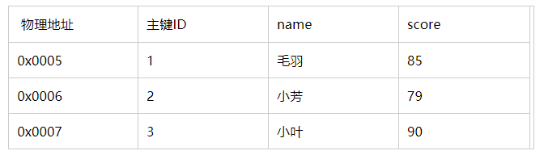
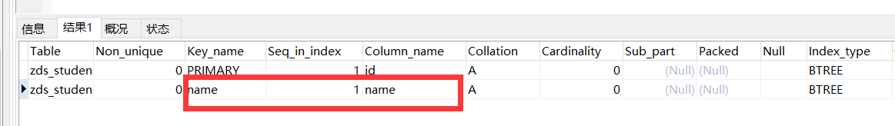
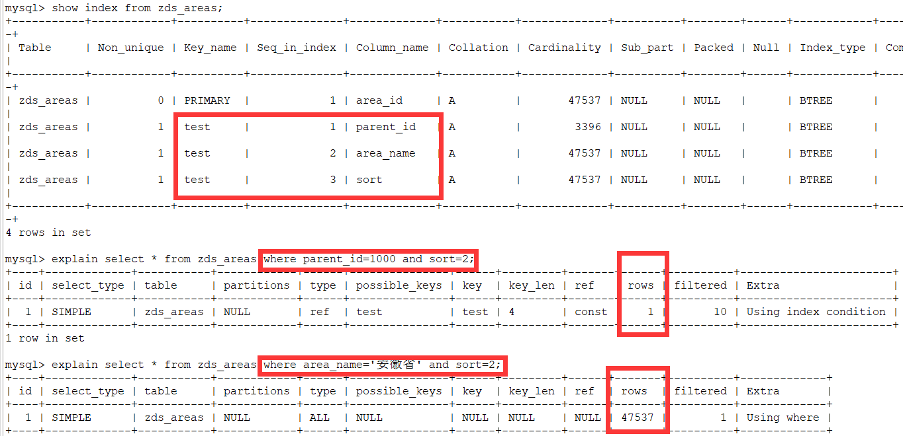
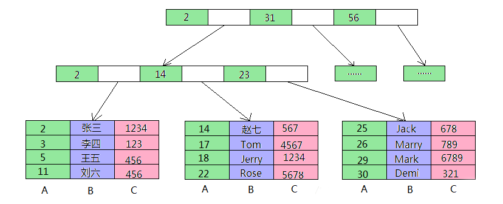

本文为作者原创内容，未经许可，禁止转载。如您发现侵权行为，请联系我们
在了解了索引实现原理之后，本文将来讨论索引在MySQL中的种类与应用。
聚集索引（聚簇索引）：

CREATE TABLE `student` (
`id` int(4) NOT NULL AUTO_INCREMENT,
`name` char(20) NOT NULL,
PRIMARY KEY (id) --声明主键，即给ID添加了一个聚集索引
) ENGINE=MyISAM DEFAULT CHARSET=utf8alter table 表名 add primary key(列名);alter table 表名 drop primary key;tip:最好是在建表的时候声明主键，否则在表中已经有数据的情况下去建立主键，会根据索引列的排序去移动数据行的存储顺序，消耗性能。
非聚集索引：
create table zds_student(
id int(10) unsigned not null auto_increment comment '表ID',
name VARCHAR(32) unique not null default '',
age int not null,
primary key(id)
)engine=myisam default charset=utf8;再执行如下SQL：
show index from zds_student;
如我们所料，在声明完整性约束时就创建了唯一索引。
唯一索引的创建与删除：
create table zds_student(
id int(10) unsigned not null auto_increment comment '表ID',
name VARCHAR(32) not null default '',
age int not null,
primary key(id),
unique index index_unique(name)
)engine=myisam default charset=utf8;
tip:其中index_unique是索引的名称，也可以这样写：unique key(name)，此时索引名默认为列名，即namealter table 表名 add unique index(列名);//默认唯一索引名为列名
alter table 表名 add unique index 自定义索引名(列名);//可以自定义索引名称alter table 表名 drop index 索引名称;select id,username from table where username ='毛羽';
select username from table username = '毛羽';不需要进行二次查询，因为我们可以直接在叶子节点上得到想要的值。但，如果进行如下的查询：
select username,score from table where username='毛羽';就会进行二次查询，因为从也在节点上得到了username,但是没有score，会根据叶子节点聚集索引的值进行二次查询。
tip：在数据量不大的情况下，DBMS有可能不会使用非聚集索引进行查询，而是使用聚集索引进行查询，即便是扫描整个聚集索引，效率也会比使用非聚集索引高。
select A,B,C from table where B='TEST'复合索引不会使用， 因为不符合“最左匹配原则”，条件中没有出现最左边的A元素。
select A,B,C from table where A='TEST' and C='TEST'
select A,B,C from table where A='TEST' and B='TEST' and C='TEST';
select A,B,C from table where A='TEST' and B='TEST';复合索引会被使用
动手实验见如下表：（zds_area表共有四个字段，area_id,parent_id,area_name,sort）

那为什么会最左原则呢？我们看下复合索引创建的原理：

1.=和in可以乱序，比如a = 1 and b = 2 and c = 3 建立(a,b,c)索引可以任意顺序，mysql的查询优化器会帮你优化成索引可以识别的形式
2.尽量选择区分度高的列作为索引,区分度的公式是count(distinct col)/count(*)，表示字段不重复的比例，比例越大我们扫描的记录数越少，唯一键的区分度是1，而一些状态、性别字段可能在大数据面前区分度就是0，那可能有人会问，这个比例有什么经验值吗？使用场景不同，这个值也很难确定，一般需要join的字段我们都要求是0.1以上，即平均1条扫描10条记录
3.索引列不能参与计算，保持列“干净”，比如from_unixtime(create_time) = ’2014-05-29’就不能使用到索引，原因很简单，b+树中存的都是数据表中的字段值，但进行检索时，需要把所有元素都应用函数才能比较，显然成本太大。所以语句应该写成create_time = unix_timestamp(’2014-05-29’);
4.尽量的扩展索引，不要新建索引。比如表中已经有a的索引，现在要加(a,b)的索引，那么只需要修改原来的索引即可感谢。